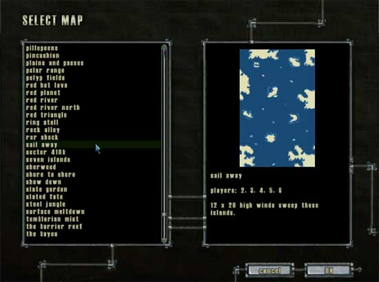

Guide de jeu
Au lancement du jeu vous arrivez dans le menu principal. Vous avez quatre boutons:
Solo - lancer une partie en mode campagne/bataille
Options - configurer TA3D
Multiplayer - démarrer/rejoindre une partie multi-joueurs
Quitter - quitter TA3D

Solo
Affiche les options du mode solo.
Campagne - Jouer en les campagnes de TA.
Bataille - Jouer une partie en mode bataille contre l'ordinateur.
Charger - Charger une partie sauvegardée.

Campagne
Ici vous choisissez votre camp et la mission de votre choix
Et vous pouvez ajuster le niveau de difficulté.


Bataille
Vous vous retrouvez devant un écran de configuration de partie. Vous pouvez choisir votre race (ARM/CORE par défaut), nom de joueur, couleur et vos ressources.
Chose a different AI script to play TA3D with different rules. See more about scripts below.
Il vous est aussi possible de configurer le brouillard de guerre.
off - pas de brouillard de guerre, tout est visible.
gris - toute la carte est visible, mais pas les unités de vos adversaires si elles ne sont pas dans votre champ de vision
noir - rien n'est visible avant d'avoir été découvert.
on - rien n'est visible avant d'avoir été découvert, les unités n'apparaissent que dans votre champ de vision.

Sur la droite de l'écran vous pouvez changer la carte en cliquant sur la minicarte.
Choisir une carte
Toutes les cartes trouvées dans le dossier de TA3D s'affichent. Sélectionnez une carte pour voir sa minicarte et sa description à droite de l'écran. Cliquez sur "OK" pour valider la sélection et sur "Retour" pour revenir sans rien changer à l'écran précédent. "Entrée" et "Echap" font la mˆme chose que "OK" et "Retour"

Choisir un script
Choisir un script permet de changer les règles de la partie. Par example, defence.lua fait apparaître des unités adverses à intervalles réguliers. Toutes les quelques minutes des unités apparaissent et vous attaquent. Si le joueur survit à plusieurs vagues il gagne la partie.
Les scripts peuvent ˆtre modifiés dans ta3d/scripts/. N'hésitez pas à en créer!

Options


showfps - compteur fps
fps_limit - fixe une limite de fps
wireframe - mode fil de fer
particle - particules
waves - vagues
shadows - ombres
height line - indicateur visuel d'altitude des avions
detail texture - textures de détails
draw console while loading - affiche/cache la console pendant le chargement
fullscreen - mode plein écran
language - langue de l'interface (anglais, français, ...)
screen - résolution d'écran dans TA3D (640x480, 800x600 etc.)
shadow quality - qualité des ombres
water quality - qualité du rendu de l'eau
Current mod - mod actif
Player name - nom du joueur local
game speed - vitesse du jeu
antialiasing - anti-aliasing
Dans la partie Audio du menu vous pouvez choisir les fichiers audio qui seront joués pendant le jeu. Pour ajouter des fichiers copiez simplement vos musiques mp3, ogg, wma(windows seulement), ... dans ta3d/music/.
et d'autres options concernant la position par défaut de la caméra.
Bien commencer...
1. Il y a deux types de ressources, comme dans Total Annihilation - le Métal et l'Energie.
le Métal peut ˆtre extrait depuis les affleurements de métal et l'Energie générée par des panneaux solaires, des centrales géothermiques, des centrales nucléaires, ...
Le jeu commence avec une seule unité, le commandeur.

2.la sélection d'unités se fait avec le clic gauche (shift pour ajouter à la sélection courante) ou au lasso autour de plusieurs unités.
Pour donner l'ordre aux unités de se déplacer, sélectionnez les et cliquez là où vous voulez qu'elles aillent, clic droit pour les déselectionner.

3. Pour construire un bâtiment, sélectionnez une unité de construction, cliquez sur le bâtiment à construire dans le menu à droite, puis sur la carte là où vous voulez le construire.
4. Les bâtiments ne peuvent pas ˆtre construits n'importe où. Les structures peuvent ˆtre construites sur les surfaces planes.

5. Pour construire une unité, construisez les usines nécessaires (labo de k-bot, usine aérienne, usine de véhicules etc...) puis cliquez sur l'icône de l'unité à construire sur le menu à gauche de l'écran.

Fin de partie
Une fois la partie finie un écran de résumé de la partie s'affiche.
Contrôle de la caméra
La caméra montre une vue similaire à celle de Total Annihilation, avec la capacité de modifier l'angle de vue.
Ce dernier va de 45 à 90 degrés par défaut (dans Total Annihilation l'angle est de 63.44 degrés) et peut ˆtre changé à la molette de votre souris(actives aussi le Mega Zoom comme dans Supreme Commander).
Vous pouvez déplacer la caméra avec la minicarte ou bien en pressant le bouton du milieu de votre souris.
En bas à gauche de l'écran une icône permet de passer au mode caméra libre. En mode caméra libre utilisez les touches flˆchées pour vous déplacer, la molette fait reculer/avancer et en pressant le bouton du milieu de votre souris vous pouvez regardez librement autour de vous.
Voici les commandes supportées:
CTRL+0..9 crée un groupe d'unités
ALT+0..9 sélectionne un groupe créé précedemment
CTRL+C sélectionne le commandeur
CTRL+Z sélectionne les unités du type sélectionné
CTRL+D (dés)active l'autodestruction
")" ("`" ou "²" sous windows) affiche/cache la console
F1 affiche une fenˆtre d'informations sur l'unité sélectionnée
F12 fait une capture d'écran
Raccourcis:
"A" - attaquer
"R" - réparer
"M" - mouvement
"L" - charger une unité (transporteurs seulement)
"U" - décharger
"P" - patrouiller
"E" - récupérer
"T" - mode suiveur de la caméra